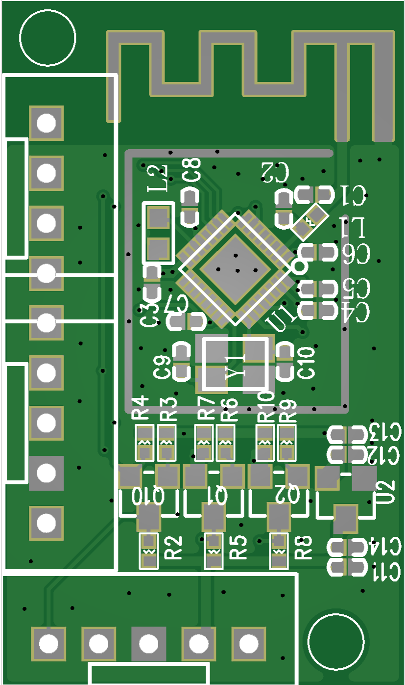
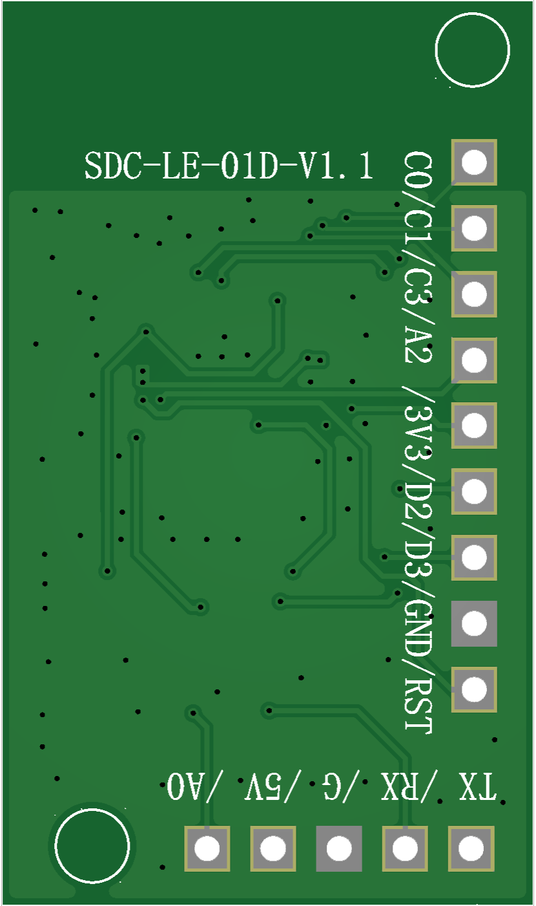
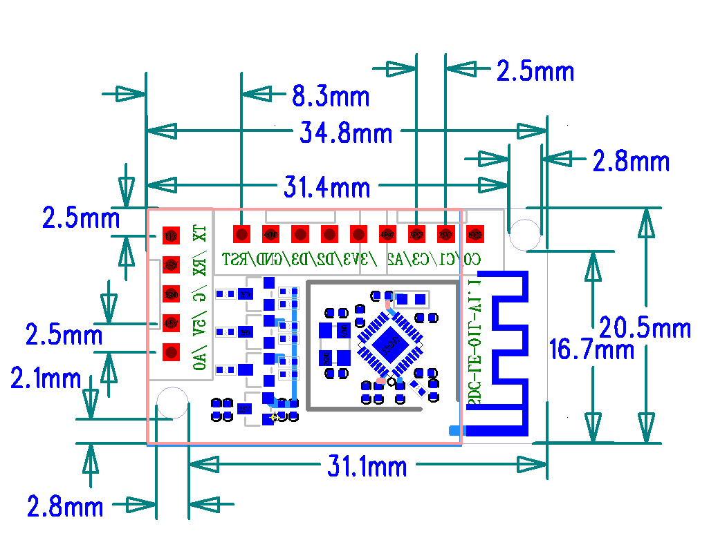
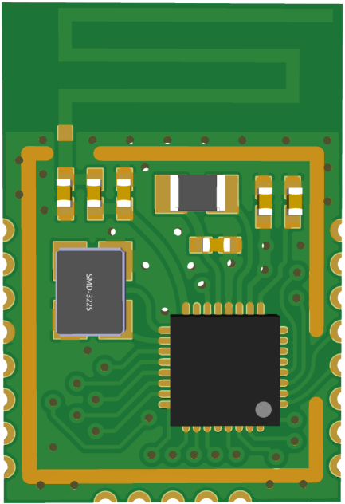
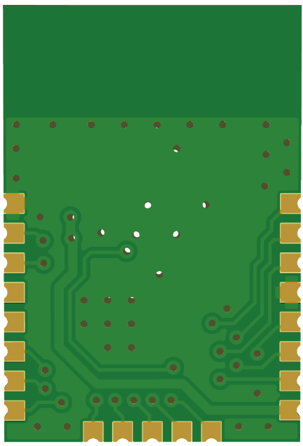
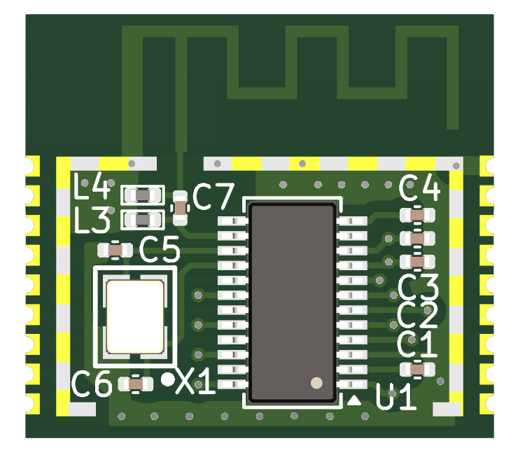
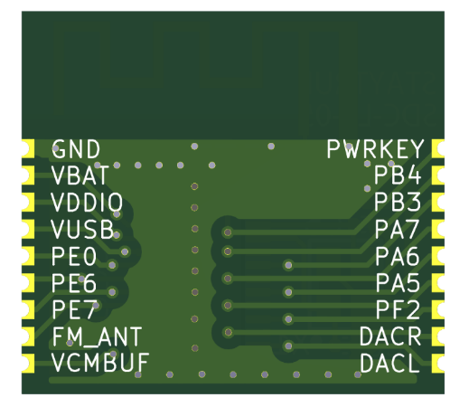
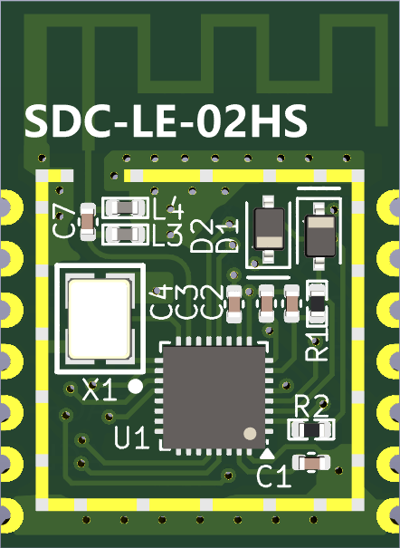
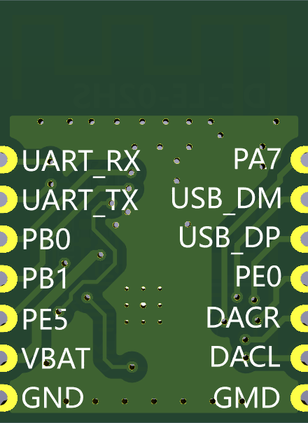

STAYTRUE 模块¶
STAYTRUE 是泉州思德初电子科技有限公司推出的系列蓝牙模组产品，涵盖BLE单模/蓝牙双模类型，适配运动设备、消费电子等多场景，全系列模组均通过SRRC、FCC、BQB等认证，支持多接口扩展，满足工业级温宽要求，可快速接入PuroFit、Kinomap、Zwift等第三方APP。
本章节包含STAYTRUE系列核心模组：SDC-LE-01、SDC-LE-01D、SDC-LE-A3、SDC-LE-A3L、SDC-LE-A3H、SDC-LE-05、SDC-LE-02HD、SDC-LE-02HS、SDC-HR-P01的完整技术参数与使用规范。
一、系列模组核心型号概览¶
STAYTRUE系列模组按蓝牙规格/功能定位分为5款核心型号，适配不同场景需求，核心差异如下：
模组型号 |
核心优势 |
安装方式 |
关键兼容特性 |
典型供电 |
|---|---|---|---|---|
SDC-LE-01 |
成本更低，引脚全部引出，支持基础定制 |
贴片 |
BLE单模 |
1.8~3.6V（3.3V） |
SDC-LE-01D |
插件设计，快速组装 |
插针 |
BLE单模+5V供电+串口 |
3~5.5V（5V） |
SDC-LE-A3 |
极致成本控制，满足基础BLE通信需求 |
贴片 |
BLE单模 |
2~4.5V（3.3V） |
SDC-LE-A3L |
双安装方式（贴片+插针），适配多形态产品 |
贴片+插针 |
BLE单模 |
2~4.5V（3.3V） |
SDC-LE-A3H |
5V宽压支持，适应复杂供电环境 |
贴片+插针 |
BLE单模+5V供电 |
3~5.5V（5V） |
SDC-LE-05 |
完整音频引脚，支持BT/BLE双模 |
贴片 |
BT(音频)/BLE双模 |
2.4~4.5V（3.3V） |
SDC-LE-02HD |
强化5V电压+串口兼容，跨设备适配 |
插针 |
BT(音频)/BLE双模+5V供电/串口 |
3~5V（5V） |
SDC-LE-02HS |
强化5V电压+串口兼容，跨设备适配 |
贴片 |
BT(音频)/BLE双模+5V供电串口 |
3~5V（5V） |
SDC-HR-P01 |
内置心率算法，即插即用，无需二次开发 |
专用接口 |
串口通信 |
3.2~3.6V（3.3V） |
二、各型号模组详细参数¶
2.1 SDC-LE-01¶
专为跑步机、单车、划船机等运动设备设计，板载天线+邮票孔封装，支持第三方APP直连。

|

|

|

|
核心性能¶
处理器：32位高性能RISC核心，16MHz时钟
存储：512KB Flash + 40KB SRAM
蓝牙射频：2.4GHz BLE5.0，-97dBm接收灵敏度，输出功率-20~+7dBm可编程
认证：SRRC、FCC、CE-RED、BQB、NCC
工作温度：-40℃ ~ +105℃
封装尺寸：19×13mm（邮票孔）
关键引脚定义（共5引脚）¶
引脚 |
信号名 |
描述 |
引脚类型 |
|---|---|---|---|
GND |
GND |
模块地 |
P（电源） |
RST |
RST |
复位脚，0=复位/1=正常工作，完成复位后应设置为悬浮输入 |
I（输入） |
PD2 |
UART_RX |
串口RX数据接收端 |
I（输入） |
PD3 |
UART_TX |
串口TX数据发送端 |
O（输出） |
3V |
VCC |
电源正极，1.8~3.6V（典型3.3V） |
P（电源） |
极限参数¶
参数 |
说明 |
范围 |
单位 |
|---|---|---|---|
VDD |
稳态电源电压 |
-0.3 to 3.6 |
V |
Tamb |
工作温度 |
-40~+105 |
℃ |
Tstg |
储藏温度 |
-40~+105 |
℃ |
Ground |
地 |
-0.3~0.3 |
V |
Voh |
数字输出高电平 |
VDD-0.3 ~ VDD+0.3 |
V |
Vol |
数字输出低电平 |
<0.4 |
V |
Ioh |
拉电流 |
15 |
mA |
Iol |
灌电流 |
11 |
mA |
Vih |
数字输入高电平 |
≥0.7×VDD |
V |
ViL |
数字输入低电平 |
≤0.3×VDD |
V |
2.2 SDC-LE-01D¶
SDC-LE-01的插件版本，采用32位高性能RISC核心，优化了封装设计，支持直接插件安装，适合快速原型开发和小批量生产。同时具备宽电压输入特性，支持3.0V~5.5V供电（典型5V），串口支持3V/5V电平兼容，可直接与不同电平的MCU通信，无需额外电平转换电路。
 |
 |
{kind=link}
{kind=link}
{kind=link}

核心性能¶
处理器: 32位高性能RISC核心,16MHz时钟
存储: 512KB Flash + 40KB SRAM
蓝牙射频: 2.4GHz BLE5.0,-97dBm接收灵敏度,输出功率-20~+7dBm可编程
电源特性: 宽电压输入范围,支持3.0V~5.5V供电(典型5V),具备过压保护机制
串口特性: 支持3V/5V电平兼容,可直接与不同电平的MCU通信,无需额外电平转换电路
认证: SRRC、FCC、BQB、NCC
工作温度：-40℃ ~ +105℃
封装尺寸: 31.4x20.5mm(插件接口)
关键引脚定义¶
引脚 |
信号名 |
描述 |
引脚类型 |
|---|---|---|---|
TX |
UART_TX |
串口TX数据发送端 |
O（输出） |
RX |
UART_RX |
串口RX数据接收端 |
I（输入） |
G |
GND |
模块地 |
P（电源） |
5V |
VCC |
电源正极，3~5.5V（典型5V） |
P（电源） |
A0 |
2.3 SDC-LE-A3¶
AB2021A3核心，极致成本控制，满足基础BLE通信需求，采用贴片封装，支持CrossBar IO映射，适配常规智能设备应用场景。
{kind=link}

{kind=link}

核心性能¶
处理器：32位RISC-V内核，120MHz主频
存储：512KB Flash + 64KB SRAM + 8K cache
蓝牙射频：BLE5.4（1Mbps/2Mbps/Long Range），发射+9dBm，接收-94dBm@1Mbps
典型供电：2~4.5V（3.3V）
扩展功能：21引脚引出，支持UART/IIC/SPI、44按键矩阵扫描、Touch Key、LEDC幻彩灯驱动
特殊IO：2路高压IO（PA0/PA1），支持5V MCU通信
温宽：工业级，工作-40℃~85℃，存储-40℃~125℃
核心特性¶
所有GPIO支持CrossBar任意映射，上电后软件配置即可切换功能
邮票孔封装，半孔间距1.27mm，尺寸13×19mm
2.4 SDC-LE-A3L¶
SDC-LE-A3升级款，双安装方式（贴片+插针），适配多形态产品，36引脚高扩展，支持高速串口/普通串口双串口，适配多外设场景。

核心性能¶
处理器：32位RISC-V CPU，主频最高120MHz
存储：4Mbit Flash + 64KB RAM + 8K cache
蓝牙射频：BLE5.4（QDID:222495），发射+9dBm，接收-94dBm@1M BLE
扩展功能：21引脚引出，1路普通串口+1路高速串口，8pin支持44按键矩阵扫描，12路10-bit SAR ADC
供电：双VBAT引脚（P26/P36），供电2~4.5V（3.3V）
温宽：工业级，工作-40℃~85℃，存储-65℃~150℃
关键注意点¶
PB0引脚作为GPIO时，休眠时不可上拉电源，存在漏电风险
高压IO（PA0/PA1）耐5V，可直接与5V MCU通信，其余IO均为3.3V
复位脚P28（PKEY），10S拉低触发软开/关机
邮票孔封装，半孔间距1.5mm，尺寸21×25mm
2.5 SDC-LE-A3H¶
SDC-LE-A3的宽压版本，5V宽压支持，适应复杂供电环境，采用贴片+插针双安装方式，优化了电源管理，适合电池供电的便携设备。

核心性能¶
处理器：32位RISC-V内核，120MHz主频
存储：512KB Flash + 64KB SRAM + 8K cache
蓝牙射频：BLE5.4（1Mbps/2Mbps/Long Range），发射+7dBm，接收-94dBm@1Mbps
扩展功能：21引脚引出，支持UART/IIC/SPI、44按键矩阵扫描、Touch Key、LEDC幻彩灯驱动
特殊IO：2路高压IO（PA0/PA1），支持5V MCU通信
典型供电：3~5.5V（5V）
温宽：工业级，工作-40℃~85℃，存储-40℃~125℃
核心特性¶
所有GPIO支持CrossBar任意映射，上电后软件配置即可切换功能
优化的电源管理，休眠电流低至10μA
邮票孔封装，半孔间距1.27mm，尺寸13×19mm
2.6 SDC-LE-05¶
AB5605B核心，蓝牙双模设计，主打音频功能，支持FM接收、SD卡音频播放，适配带音频输出的消费电子。
{kind=link}

{kind=link}

核心性能¶
处理器：32位RISC-V CPU，125MHz主频
存储：4Mbit Flash + 128KB RAM
蓝牙射频：BT5.4双模（QDID:215269），发射6dBm，接收-90.5dBm@EDR(2M带宽)
音频功能：16bit立体声、软件EQ均衡器、1段DRC动态范围压缩，1路MIC输入，左右声道差分输出
扩展功能：FM接收（76~108MHz）、SD卡音频播放、UART串口、MUTE静音控制
封装：18引脚引出，支持差分/单端音频输出
温宽：工业级，工作-40℃~85℃，存储-65℃~150℃
核心电气参数¶
名称 |
最小值 |
典型值 |
最大值 |
单位 |
|---|---|---|---|---|
VBAT供电电压 |
2.4 |
3.3 |
4.5 |
V |
I/O电源电压 |
3.3 |
V |
||
VDDIO |
3.3 |
V |
||
工作温度 |
-40 |
85 |
℃ |
|
存储温度 |
-65 |
150 |
℃ |
关键功能引脚¶
MUTE：P5引脚（PE0），高电平触发静音
UART：P3（Tx/PE7）、P4（Rx/PE6）
音频输出：P1（VCMBU/音频负端，差分输出时有效）、P17（DACR/右声道）、P18（DACL/左声道）
FM天线：P2（FM_ANT）
SD卡：P13（SDDAT/PA7）、P14（SDCLK/PA6）、P15（SDCMD/PA5）
MIC输入：P16（MICIN/PF2）
电源输入：P8（VBAT）、P6（VUSB，使用内置充电时需串1R电阻+对地10uF滤波电容）
复位：P10（PWRKEY），10S拉低触发软开/关机
电源输出：P7（VDDIO）
2.7 SDC-LE-02HD（BT5.4 双模高清音频型）¶
SDC-LE-05的高清音频版本，主打高音质输出，支持无损音频播放，适配高端音频设备。同时具备宽电压输入特性，支持3.0V~5.0V供电（典型5V），串口支持3.3V/5V电平兼容，可直接与不同电平的MCU通信，无需额外电平转换电路。

核心性能¶
处理器：32位RISC-V CPU，125MHz主频
存储：4Mbit Flash + 128KB RAM
蓝牙射频：BT5.4双模，发射6dBm，接收-90.5dBm@EDR(2M带宽)
音频功能：24bit高清立体声、高级EQ均衡器、2段DRC动态范围压缩，2路MIC输入
扩展功能：FM接收（76~108MHz）、SD卡音频播放、UART串口、MUTE静音控制
封装：18引脚引出，支持差分/单端音频输出
典型供电：3~5V（5V）
温宽：工业级，工作-40℃~85℃，存储-65℃~150℃
2.8 SDC-LE-02HS（BT5.4 双模高灵敏度音频型）¶
SDC-LE-05的高灵敏度版本，增强了音频接收能力，适合需要远距离音频传输的场景。同时具备宽电压输入特性，支持3.0V~5.0V供电（典型5V），串口支持3.3V/5V电平兼容，可直接与不同电平的MCU通信，无需额外电平转换电路。
{kind=link}

{kind=link}

核心性能¶
处理器：32位RISC-V CPU，125MHz主频
存储：4Mbit Flash + 128KB RAM
蓝牙射频：BT5.4双模，发射8dBm，接收-92dBm@EDR(2M带宽)
音频功能：16bit立体声、软件EQ均衡器、1段DRC动态范围压缩，1路MIC输入
扩展功能：FM接收（76~108MHz）、SD卡音频播放、UART串口、MUTE静音控制
封装：18引脚引出，支持差分/单端音频输出
典型供电：3~5V（5V）
温宽：工业级，工作-40℃~85℃，存储-65℃~150℃
2.9 SDC-HR-P01（BLE5.0 心率监测型）¶
内置心率算法，即插即用，无需二次开发，适合需要心率监测功能的设备。
核心性能¶
处理器：32位高性能RISC核心，16MHz时钟
存储：512KB Flash + 40KB SRAM
蓝牙射频：2.4GHz BLE5.0，-97dBm接收灵敏度，输出功率-20~+7dBm可编程
心率算法：内置高精度心率监测算法，支持实时心率数据采集与传输
扩展功能：专用心率传感器接口，UART串口通信
封装：专用接口设计，方便快速集成
典型供电：3.2~3.6V（3.3V）
温宽：工业级，-40℃ ~ +105℃
核心特性¶
即插即用，无需二次开发心率算法
高精度心率监测，支持运动状态下的心率数据采集
低功耗设计，适合电池供电设备
专用接口设计，方便与心率传感器连接
三、全系列通用使用规范¶
所有STAYTRUE系列模组均遵循以下通用使用要求，违规操作可能导致模组损坏或性能退化。 3.1 电气使用要求 ^^^^^^^^^^^^^^^^ 1. 所有模组IO口默认3.3V，仅SDC-LE-A3/SDC-LE-A3L的PA0/PA1支持5V高压通信，其余IO严禁接5V电平 2. VBAT供电需严格遵循各型号电压范围，超压会直接烧毁芯片 3. SDC-LE-05的VUSB引脚使用内置充电时，5V与VUSB之间需串1R电阻+对地10uF滤波电容，防止高压脉冲损坏 4. 复位脚拉低时间需满足规格要求（10S），短时间拉低无效
3.2 生产工艺要求¶
回流焊：全系列模组**建议仅过一次回流焊**，需严格遵循厂家提供的炉温曲线
超声波防护：严禁暴露于超声波焊接/清洗设备，振动会与内部晶振共振，导致晶振故障/失灵；超声波场景需联系厂家定制专用型号
封装焊接：邮票孔封装焊接时需控制焊锡量，避免短路引脚
炉温曲线：需严格遵循厂家提供的回流焊温度曲线
超声波振动：避免将模组暴露于超声波焊接机或超声波清洗机等超声波设备的振动中，可能导致晶振故障甚至失灵
3.3 存储与环境要求¶
存储温湿度：模组需在干燥、常温环境存储，避免高温高湿、酸碱腐蚀环境
静电防护：模组为静电敏感器件，生产/焊接时需做静电防护（ESD），接地操作
物理防护：避免模组受到机械撞击、引脚弯折，板载天线区域禁止遮挡/焊接
四、包装与售后¶
4.1 包装规格¶
全系列模组支持编带装/盘装两种包装方式，具体规格（TBD）可联系厂家定制。
4.2 售后支持¶
模组质保：非人为损坏情况下，提供原厂质保
技术支持：超声波定制、功能二次开发、外设对接等场景，可联系厂家提供专属解决方案
资料获取：模组原理图、炉温曲线、驱动程序等资料，可向厂家申请
五、认证证书¶
STAYTRUE系列模组均通过多项国际认证，确保产品的安全性、可靠性和合规性。以下是各模组的认证证书信息：
5.1 SDC-LE-01¶
CE-RED：符合欧盟无线电设备指令，通过CE认证
FCC：符合美国联邦通信委员会标准，通过FCC认证
NCC：符合台湾通讯传播委员会标准，通过NCC认证
SRRC：符合中国无线电管理委员会标准，通过SRRC认证
BQB：符合蓝牙技术联盟标准，通过BQB认证
5.2 SDC-LE-01D¶
SRRC：符合中国无线电管理委员会标准，通过SRRC认证
FCC：符合美国联邦通信委员会标准，通过FCC认证
BQB：符合蓝牙技术联盟标准，通过BQB认证
5.3 SDC-LE-05¶
CE-RED：符合欧盟无线电设备指令，通过CE认证
FCC：符合美国联邦通信委员会标准，通过FCC认证
SRRC：符合中国无线电管理委员会标准，通过SRRC认证
BQB：符合蓝牙技术联盟标准，通过BQB认证（QDID:215269）
5.4 SDC-LE-02HD¶
CE-RED：符合欧盟无线电设备指令，通过CE认证
FCC：符合美国联邦通信委员会标准，通过FCC认证
SRRC：符合中国无线电管理委员会标准，通过SRRC认证
BQB：符合蓝牙技术联盟标准，通过BQB认证
5.5 SDC-LE-02HS¶
CE-RED：符合欧盟无线电设备指令，通过CE认证
FCC：符合美国联邦通信委员会标准，通过FCC认证
SRRC：符合中国无线电管理委员会标准，通过SRRC认证
BQB：符合蓝牙技术联盟标准，通过BQB认证
5.6 SDC-LE-A3¶
CE-RED：符合欧盟无线电设备指令，通过CE认证
FCC：符合美国联邦通信委员会标准，通过FCC认证
SRRC：符合中国无线电管理委员会标准，通过SRRC认证
BQB：符合蓝牙技术联盟标准，通过BQB认证
5.7 SDC-LE-A3H¶
CE-RED：符合欧盟无线电设备指令，通过CE认证
FCC：符合美国联邦通信委员会标准，通过FCC认证
SRRC：符合中国无线电管理委员会标准，通过SRRC认证
BQB：符合蓝牙技术联盟标准，通过BQB认证
5.8 SDC-LE-A3L¶
CE-RED：符合欧盟无线电设备指令，通过CE认证
FCC：符合美国联邦通信委员会标准，通过FCC认证
SRRC：符合中国无线电管理委员会标准，通过SRRC认证
BQB：符合蓝牙技术联盟标准，通过BQB认证（QDID:222495）
5.9 SDC-HR-P01¶
CE-RED：符合欧盟无线电设备指令，通过CE认证
FCC：符合美国联邦通信委员会标准，通过FCC认证
SRRC：符合中国无线电管理委员会标准，通过SRRC认证
BQB：符合蓝牙技术联盟标准，通过BQB认证